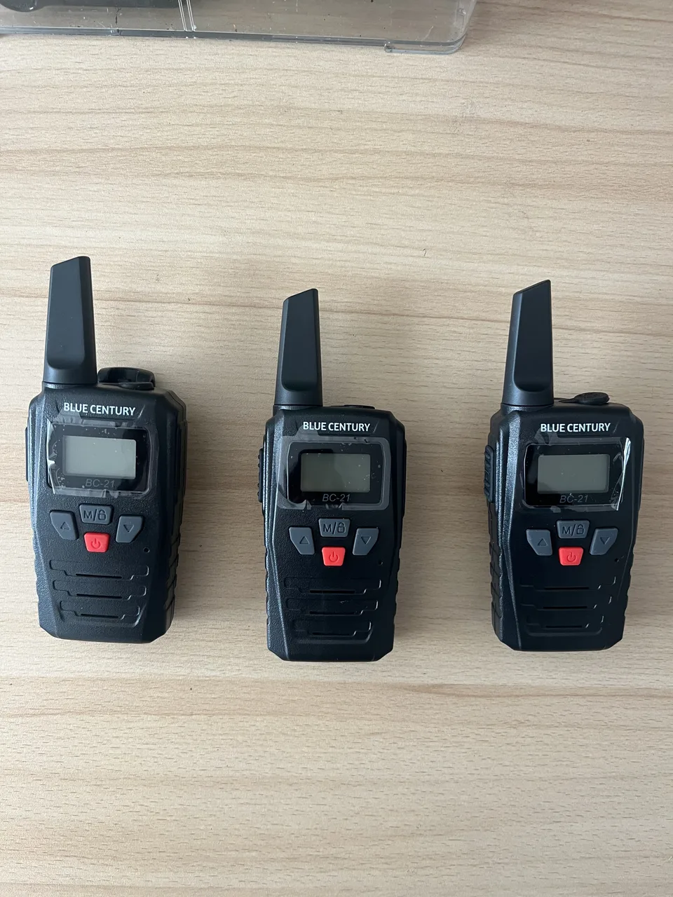

私たちの想い
我が家で過ごすような、心地よさを。
私どもは、幅広いご利用者様のご要望にお応えするため、「デイサービス福泊」にて、要介護、要支援の方へ、「福泊カフェ」では、認知症の方を専門としたサービスを皆様にお届け致しております。住み慣れた地域で暮らしたいと望まれる皆様のために、我が家で過ごしているようなサービスをご提供しています。その一環として、施設内の床は全て畳仕様。自宅に居るようなのんびりした気分で、認知症のご利用者様にも、安心してお寛ぎいただいています。また、スタッフ一人ひとりが、ご利用者様お一人おひとりと向き合い、家族と接するように親身に対応。介護を必要としているご利用者様、ご家族様、そして地域のために貢献したいという強い思いが、私たちのサービスを支えています。
施設・アクセス
いつもの地域で、これからも。
小規模・ワンフロアのメリットを活かし、施設の隅々にまでスタッフの目と声が行き渡ります。
スタッフブログ
福泊の日々

求人情報